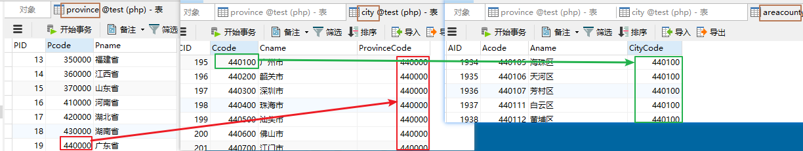
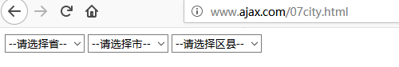
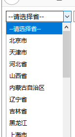
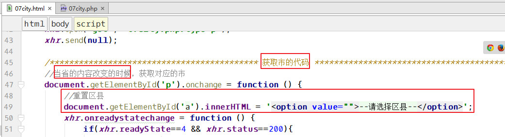
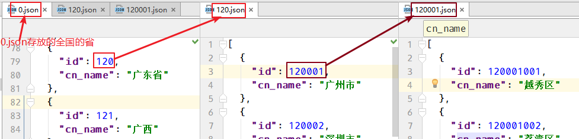
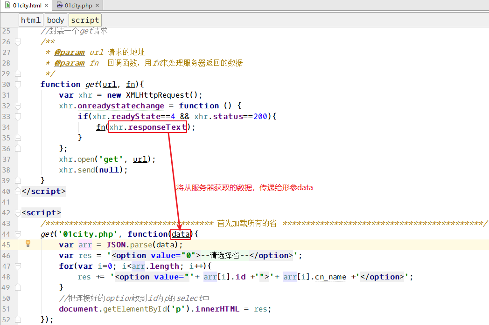

十二、案例：省市县三级联动
1、数据表的关系

省表：province
市表：city
区县：areacounty
对应关系：
province表中的==Pcode==字段和city表中的==ProvinceCode==对应
city表中的==Ccode==和areacounty表中的==CityCode==对应
查询所有的省：select * from province
查询广东省下面的市：select * from city where ProvinceCode=440000 //440000是广东省的Pcode
查询广州市下面的区县：select * from areacounty where CityCode=440100 //440100是广州市的Ccode
2、制作html页面
1 | <body> |
效果：

3、页面加载，先获取所有的省
通过js，发送ajax请求到07city.php，然后获取所有的省。
约定用type区分，此次请求要取什么数据。
先写07city.php，获取所有的省：
1 | $pdo = new PDO('mysql:host=localhost; dbname=test; charset=utf8', 'root', '123'); |
4、html页面发送ajax请求，把所有的省获取
1 | <script> |
效果：

5、当省切换的时候获取对应的市
js代码：
1 | /************************ 获取市的代码 *******************************/ |
PHP代码：获取对应的市
1 | $pdo = new PDO('mysql:host=localhost; dbname=test; charset=utf8', 'root', '123'); |
js处理服务器返回的市的数据：
1 | //当省的内容改变的时候，获取对应的市 |
6、当市切换的时候，获取对应的区县
复制获取市的代码，然后修改：
js代码：
1 | document.getElementById('c').onchange = function () { |
PHP代码：
1 | .... |
切换省的时候，把区县重置：

7、细节处理
- 切换省份时，区县要重置
省份重置时，市和区县都要重置
1
2
3
4
5
6
7
8
9
10
11
12
13//省份对象事件：改变
gById('p').onchange = function () {
//--------------------细节处理-----------------------//
//切换省份时，区县要重置
gById('a').innerHTML='<option value="0">--请选择区县--</option>';
//省份重置时，市和区县都要重置
if (this.value==0){
gById('c').innerHTML='<option value="0">--请选择市--</option>';
gById('a').innerHTML='<option value="0">--请选择区县--</option>';
}
//--------------------细节处理-----------------------//市重置时，区县需要重置
1
2
3
4
5
6
7
8
9//市对象事件：改变
gById('c').onchange = function () {
//--------------------细节处理-----------------------//
//市重置时，区县要重置
if (this.value==0){
gById('a').innerHTML='<option value="0">--请选择区县--</option>';
}
//--------------------细节处理-----------------------//
十三、案例：省市县三级联动另一种思路
1、对于不经常变换的数据，可以用文件存储
全国的省、市、区县可能很多年都不会发生变化，对于这种数据，就可以不用放到数据库中，直接使用文件存储，效果很好。不但可以加快查询速度，还能减轻数据库服务器的压力。

2、获取省
首先创建01city.php，里面读取0.json，直接返回读取的json数据。
1 | //返回所有的省 |
创建01city.html ，里面先写html布局
1 | <select id="p"> |
然后js封装一个get方法：
1 | <script> |
最后调用get方法，获取所有的省，并处理
1 | /**************************** 首先加载所有的省 *****************************/ |
整体的图示：

3、获取市
1 | /********************* 获取市，省切换的时候 **************************/ |
01city.php获取地址栏的filename，根据filename来获取对应的json文件：
1 | //获取地址栏的参数 filename |
4、细节处理
上面的代码已包含。
切换省份时，区县要重置
省份重置时，市和区县都要重置
1
2
3
4
5
6
7
8
9
10
11
12
13
14//省份对象事件：改变
document.getElementById('p').onchange = function () {
//--------------------细节处理-----------------------//
//切换省份时，区县要重置
gById('a').innerHTML = '<option value="0">--请选择区县--</option>';
//省份重置时，市和区县都要重置
if (this.value == 0) {
gById('c').innerHTML = '<option value="0">--请选择市--</option>';
gById('a').innerHTML = '<option value="0">--请选择区县--</option>';
return; //终止函数往下执行
}
//--------------------细节处理-----------------------//市重置时，区县需要重置
1
2
3
4
5
6
7
8
9
10//市对象事件：改变
document.getElementById('c').onchange = function () {
//--------------------细节处理-----------------------//
//市重置时，区县要重置
if (this.value == 0) {
gById('a').innerHTML = '<option value="0">--请选择区县--</option>';
return; //终止函数往下执行
}
//--------------------细节处理-----------------------//
案例—Ajax跨域获取天气信息
接口地址1：http://wthrcdn.etouch.cn/weather_mini?citykey=101010100
==Ajax可以直接请求==，推断出对方网站肯定设置 header('Access-Control-Allow-Origin:*');。
下面是08weather.html 代码
1 | <body> |
接口地址2：http://www.weather.com.cn/data/sk/101010100.html
==Ajax不可以直接请求。==
下面是09weather.html
1 | <body> |
09weather.php代码：
1 | echo file_get_contents('http://www.weather.com.cn/data/sk/101010100.html'); |
七、案例 – Ajax无刷新分页
7.1、分页原理
比如，我的 areacounty 表有3125条数据。要求每页显示10条。那么共有多少页？
$count = 3125;
$pageSize = 10;
$maxPage = ceil($count / $pageSize);
获取第1页数据的SQL：select * from areacounty order by AID limit 0,10;
获取第2页数据的SQL：select * from areacounty order by AID limit 10,10;
获取第3页数据的SQL：select * from areacounty order by AID limit 20,10;
获取第$p页的数据的SQL：select * from areacounty order by AID limit ($p-1)*$pageSize, $pageSize;
7.2、传统的分页
TODO
7.3、异步请求数据，完成无刷新分页
TODO